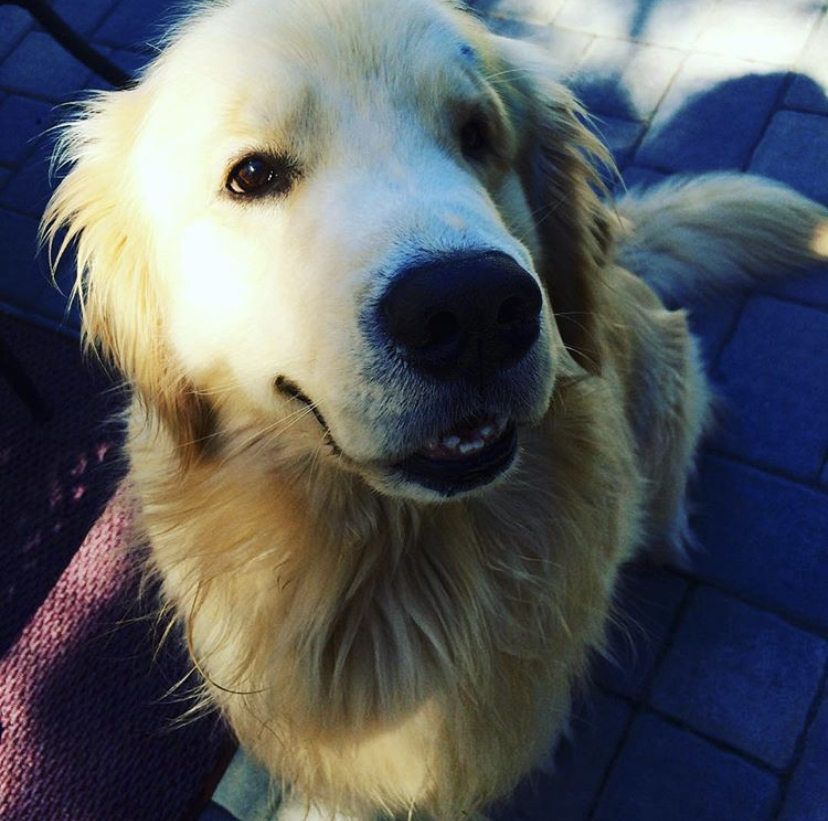

 Hi! I'm Michael Torres. There are four people in my immediate family; Me, my mom, my dad, and my sister Jessica. We have a golden retriever named Blondy (Shown on the right). I'm 16 as of September 24th, 2020, and I'm mainly interested in mathematics and science research but I also pursue coding in my free time. Generally I'm a fast learner, but I don't enjoy classes such as history or english. I'm active at Stony Brook where I take a lot of classes for the STEP program as well.
When I have free time I'm usually playing games and/or talking with my friends. When in person we normally bike, but due to Covid we've mostly talked over Discord. I also tutor people in classes such as math or science since I'm fairly confident in my teaching ability and I enjoy helping other people out. What I MOST enjoy however is taking Mr. Claps' classes, as it fills me with a sense of SATISFACTION and CONTENTMENT as I watch him teach the course. I'm excited to continue learning HTML and other languages this year.